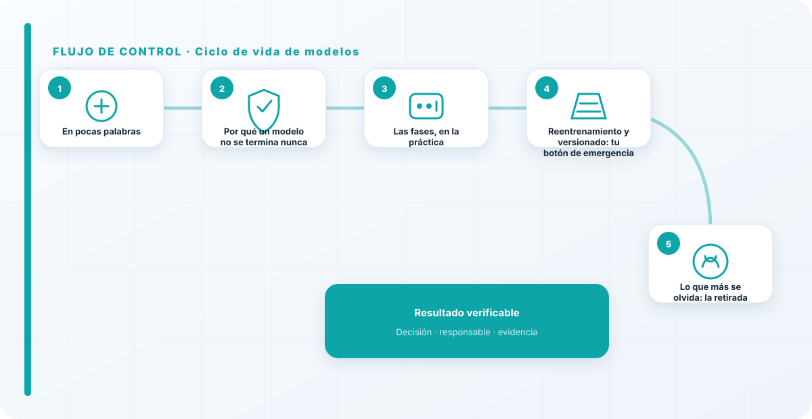
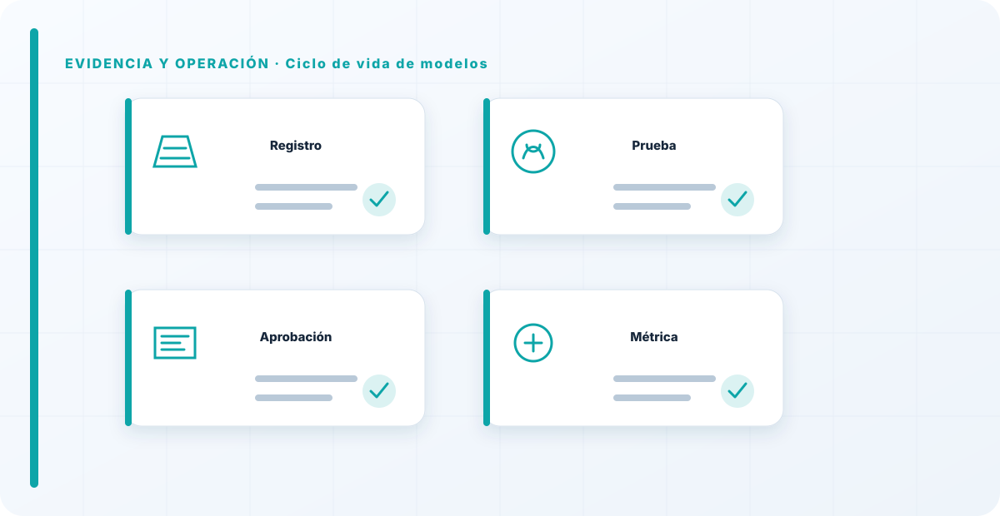

En pocas palabras
Un modelo no es un producto que se termina y se olvida; es algo vivo que se degrada solo. Se entrena, se valida, se despliega, se vigila y, tarde o temprano, se reentrena o se retira. Gobernar el ciclo de vida del modelo es asumir de raíz una idea que a mucha gente le cuesta: el trabajo no acaba en el despliegue, ahí es donde de verdad empieza. La mayoría de los problemas serios que acabo analizando no vienen de un mal entrenamiento, vienen de modelos que se desplegaron y nadie volvió a tocar.
Por qué un modelo no se termina nunca
Lo que más cuesta interiorizar a quien viene del software clásico es esto: un modelo puede empeorar sin que nadie toque una línea de código. El mundo sobre el que aprendió cambia —los datos derivan, el comportamiento de la gente cambia, el contexto se mueve— y el modelo sigue respondiendo con lo que aprendió de un mundo que ya no existe. Un modelo que era excelente hace un año puede estar tomando hoy decisiones malas, en silencio, sin dar ningún error.
Por eso trato el modelo como un sistema en operación, no como un entregable cerrado: tiene versiones, tiene mantenimiento, y tiene un final planificado. Verlo como un producto terminado —"ya está, funciona, siguiente"— es la raíz de casi todo lo que sale mal después. Un modelo desplegado no es un problema resuelto; es una responsabilidad que acabas de asumir para los próximos años.
Las fases, en la práctica
Entrenar es solo el principio, y ni siquiera la parte más delicada. Validar es comprobar que el modelo hace lo que debe y, sobre todo, descubrir dónde falla antes de que lo haga en producción y con datos reales, no solo los del laboratorio. Desplegar es ponerlo a trabajar con los controles y la monitorización ya listos, no "a ver qué tal y luego lo instrumentamos". Monitorizar es vigilar que no se degrade, y es tan importante que le dedico una guía entera.
Y luego está la decisión que casi nadie planifica: reentrenar o retirar. Reentrenar es actualizar el modelo con datos nuevos cuando el rendimiento lo pide; retirar es apagarlo cuando ya no debe seguir. Cada salto entre estas fases es una puerta con un criterio, igual que en el ciclo de vida del sistema: no se pasa de fase por inercia, se pasa porque se cumple una condición.

Reentrenamiento y versionado: tu botón de emergencia
Reentrenar no es "actualizar y ya"; es crear una versión nueva del modelo que hay que validar como si fuera un modelo nuevo, porque en la práctica lo es. Puede haber mejorado en general y haber empeorado justo en el caso que a ti te importa. Por eso versiono con disciplina: sé qué versión está en producción, con qué datos se entrenó y cuándo, y —esto es lo importante— puedo volver atrás en cuestión de minutos si la versión nueva sale peor.
Ese versionado es, en el fondo, tu botón de emergencia. El día que un modelo empiece a fallar en producción, la diferencia entre resolverlo en diez minutos o vivir una pesadilla es si puedes hacer rollback a una versión buena conocida. Reentrenar sin versionar ni validar es cambiar el motor del avión en pleno vuelo y cruzar los dedos.
Lo que más se olvida: la retirada
La fase que más incidentes causa es la que no existe en la cabeza de casi nadie: la retirada. Los modelos rara vez se apagan; se abandonan encendidos. Alguien dejó de usarlos activamente, el proyecto cambió de rumbo, la persona que los llevaba se fue, y el modelo se quedó ahí, corriendo, con acceso a datos, tomando o influyendo decisiones que ya nadie revisa. Un modelo abandonado pero vivo es una superficie de ataque olvidada y una fuente de decisiones sin control.
Por eso insisto en que cada modelo tenga, desde el día uno, un plan de cómo se apaga: cómo se migra lo que dependa de él, y qué pasa con sus datos y sus pesos cuando deja de usarse —borrado o retención controlada, no "lo dejamos ahí por si acaso"—. Un modelo que "se deja de usar" pero sigue encendido y accesible no está retirado; es un problema latente esperando a que alguien lo descubra, y normalmente lo descubre un atacante o un auditor.
La fase que más incidentes causa es la que no existe en la cabeza de casi nadie: la retirada. Los modelos no se apagan, se abandonan encendidos, y un modelo abandonado sigue decidiendo y consumiendo datos mientras nadie lo mira. Si tuviera que arreglar una sola cosa del ciclo de vida de modelos en la mayoría de organizaciones, obligaría a que cada modelo naciera con un plan de cómo muere. Lo que no se planifica apagar, no se apaga nunca.
Los errores que veo una y otra vez
- Tratar el modelo como un producto terminado en el despliegue.
- Reentrenar sin validar la versión nueva como si fuera nueva.
- No versionar, con lo que no se puede volver atrás cuando falla.
- No planificar la retirada: modelos zombis encendidos sin dueño.
- Desplegar y dejar de mirar, confiando en que seguirá igual.
- Validar solo con datos de laboratorio y no con datos reales.
Cómo lo llevaría a un entorno real
Cuando aterrizo ciclo de vida de modelos en una organización, no empiezo por comprar una herramienta ni por redactar veinte páginas. Empiezo por dibujar qué ocurre hoy: quién solicita el cambio, quién lo aprueba, qué sistemas intervienen, qué datos cruzan el proceso y quién se entera cuando algo falla. Ese dibujo suele descubrir más problemas que cualquier checklist. En gobierno de modelos, lo peligroso no es solo carecer de controles; también lo es creer que existen porque alguien los escribió una vez.
Después separo lo imprescindible de lo deseable. Lo imprescindible debe poder comprobarse: un responsable identificado, una regla clara, una evidencia fechada y un mecanismo para reaccionar. En este caso revisaría especialmente modelo, versión y dataset. No me vale una respuesta del tipo «lo gestiona el proveedor» o «eso lo mira seguridad». Necesito saber qué persona toma la decisión, con qué información y dentro de qué plazo.
La implantación debe crecer con el riesgo. Un piloto interno puede funcionar con una ficha breve y una revisión manual. Un sistema que afecta a clientes, empleados, dinero o información sensible necesita segregación de funciones, pruebas independientes, monitorización y un expediente mantenido. Mi criterio es sencillo: cuanto más difícil sea deshacer el daño, más fuerte debe ser la barrera antes de producción.
Decisiones que deben quedar por escrito
Hay decisiones que no deberían vivir en una reunión ni en un mensaje de chat. Para ciclo de vida de modelos dejaría documentados el alcance, los supuestos, los límites de uso, las excepciones aceptadas y las condiciones que obligan a detener o reevaluar. El documento no tiene que ser enorme, pero sí debe permitir que otra persona entienda por qué se hizo lo que se hizo.
También registraría quién puede cambiar evaluación, quién valida drift y quién recibe las alertas relacionadas con criterios de aceptación. Cuando esas tres responsabilidades se mezclan, aparece el clásico problema: el mismo equipo construye, aprueba y declara que todo funciona. No siempre se puede separar por completo, sobre todo en organizaciones pequeñas, pero al menos debe existir una revisión por alguien que no dependa del éxito inmediato del despliegue.
Las excepciones merecen un tratamiento propio. Una excepción sin fecha de caducidad acaba convirtiéndose en la arquitectura real. Por eso exigiría motivo, riesgo aceptado, responsable, compensaciones, fecha de revisión y criterio de cierre. Si falta uno de esos elementos, no es una excepción gestionada; es una deuda invisible.

Un ejemplo práctico
Imaginemos que un equipo quiere incorporar ciclo de vida de modelos a un servicio que ya está en producción. La propuesta promete reducir tiempos y automatizar tareas, pero utiliza componentes que cambian con frecuencia. Antes de aprobarlo, pediría una prueba limitada, un inventario de dependencias, un flujo de datos y una definición clara de qué acciones quedan fuera del alcance.
Durante la prueba recogería resultados normales y casos límite. No solo miraría si funciona; comprobaría qué ocurre cuando faltan datos, cambia una versión, se pierde conectividad, llega una entrada manipulada o un usuario intenta superar sus permisos. Ahí es donde se ve si el diseño aguanta. En muchas pruebas felices todo parece seguro porque nadie ha intentado romper la hipótesis de partida.
Si los resultados son aceptables, la salida a producción tendría condiciones: versión fijada, configuración aprobada, logs disponibles, responsables de guardia, procedimiento de rollback y revisión tras las primeras semanas. Si alguno de esos elementos no existe, prefiero retrasar el despliegue. Un día de demora suele ser más barato que investigar después un comportamiento que nadie puede reconstruir.
Qué evidencias guardaría
Para demostrar que el control funciona conservaría evidencias que cuenten una historia completa, no capturas sueltas. La historia debe enlazar necesidad, decisión, implementación, prueba y operación. En ciclo de vida de modelos eso incluye como mínimo la ficha del activo, el diagrama vigente, la configuración aprobada, el resultado de las pruebas y el registro de cambios.
No guardaría información por acumular. Si los logs contienen prompts, documentos, datos personales o secretos, aplicaría minimización, control de acceso y retención. La evidencia debe ayudar a investigar y auditar sin crear una segunda fuga de información. Es frecuente endurecer el sistema principal y dejar un repositorio de evidencias abierto a demasiadas personas.
- Propietario y finalidad de ciclo de vida de modelos, con fecha de revisión.
- Inventario de modelo, versión y dependencias asociadas.
- Criterios de aceptación y resultados sobre dataset y evaluación.
- Configuración efectiva, versión y aprobación del cambio.
- Alertas, incidentes, excepciones y acciones correctivas cerradas.
Señales de que el control no está funcionando
El primer síntoma es que nadie sabe responder con rapidez quién es el responsable. El segundo es que la documentación describe una versión distinta de la que está operando. El tercero es que las alertas existen, pero llegan a un buzón que nadie revisa. Cuando aparecen esos tres síntomas, el problema no es tecnológico: el control se ha desconectado de la operación.
También desconfío de las métricas demasiado perfectas. Cero incidentes, cero excepciones y cien por cien de cumplimiento pueden significar excelencia, pero con frecuencia significan que no estamos mirando. Prefiero indicadores que enseñen tendencia: tiempo de corrección, antigüedad de excepciones, cobertura de pruebas, cambios sin revisión y reincidencias.
Por último, revisaría el comportamiento después de cada cambio significativo. En IA, una actualización de modelo, dataset, prompt, herramienta, permiso o proveedor puede alterar el riesgo sin cambiar el nombre del servicio. Si el proceso solo reevalúa cuando se crea un proyecto nuevo, se quedará ciego durante la mayor parte de la vida útil.
Mi criterio de cierre
Considero que ciclo de vida de modelos está razonablemente controlado cuando el equipo puede explicar el proceso sin depender de una sola persona, reconstruir una decisión con evidencias y detener el servicio sin improvisar. No busco perfección documental; busco que la organización pueda tomar decisiones repetibles bajo presión.
El cierre no consiste en marcar todas las casillas. Consiste en demostrar que los riesgos relevantes tienen propietario, que los controles se prueban y que las desviaciones producen una acción. Si la evidencia no cambia ninguna decisión, probablemente estamos generando burocracia. Si una decisión importante no deja evidencia, estamos creando fragilidad.
Este enfoque es el que intento mantener en toda CyberLibrary AI: explicar el control de forma que lo entienda negocio, pero con suficiente profundidad para que arquitectura, seguridad, auditoría y operaciones puedan aplicarlo de verdad.
Referencias y marcos relacionados
Contenido educativo y técnico. No sustituye asesoramiento jurídico ni una auditoría formal.